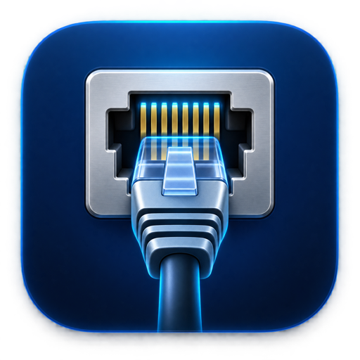

Connexion visible immédiatement
L’icône indique clairement si Ethernet est actif, sans ouvrir les réglages système.

Utilitaire natif pour macOS 14+Votre connexion Ethernet en un coup d’œil. Vérifiez instantanément si le câble est connecté, la vitesse négociée du lien et l’activité réseau — sans quitter ce que vous faites.
Pensé pour rester discret / 01
Une application légère qui répond rapidement aux questions utiles sur votre connexion filaire.
L’icône indique clairement si Ethernet est actif, sans ouvrir les réglages système.
Repérez un câble, un adaptateur ou un port limitant la connexion à 100 Mbit/s, 1 Gbit/s, 2,5 Gbit/s ou plus.
Suivez les débits de téléchargement et de téléversement dans un aperçu compact.